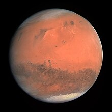

لمِرِّيخ أو الكوكب الأحمر هو الكوكب الرابع من حيث البعد عن الشمس في النظام الشمسي وهو الجار الخارجي للأرض، ويصنف المريخ كوكباً صخرياً، من مجموعة الكواكب الأرضية (الشبيهة بالأرض).

بلغ درجة حرارة السطح العليا 27 درجة مئوية
والصغرى 133- درجة مئوية. ويتكون غلاف المريخ الجوي من ثاني أكسيد الكربون والنيتروجين والآرغون وبخار الماء وغازات أخرى. رمز المريخ الفلكي هو ♂. الأيام والفصول السنوية مماثلة للفصول الموجودة في الأرض، لأن فترة الدوران وإمالة محور الدوران متشابهتان للغاية. يعتقد العلماء أن كوكب المريخ احتوى على الماء قبل 3.8 مليارات سنة، مما يجعل فرضية وجود حياة عليه متداولة نظرياً على الأقل. به جبال أعلى من مثيلاتها الأرضية ووديان ممتدة. وبه أكبر بركان في المجموعة الشمسية يطلق عليه اسم أوليمبس مونز تيمُّناً بجبل الأولمب. كما يوجد وادي مارينر والذي يعتبر أحد أكبر الأخاديد في المجموعة الشمسية.